Neste Tutorial vamos Criar um Cubo e Texturizá-lo, Usando Boas Práticas para facilitar a Renderização do Objeto no Navegador.
Você pode já usar o Cubo que vem por padrão em um novo projeto do Blender 3D. Mas se preferir ou se ao iniciar o Blender não tiver este Objeto, faça o seguinte: Use a combinação de atalhos Shift + C para posicionar a âncora do Blender no Centro da 3D View origem do cenário.
Selecione com o atalho Shift + A, Add -> Mesh -> Cube Pronto, já temos nosso objeto de estudo.
Agora vamos editar a geometria do cubo adicionando mais Vértices e Arestas para facilitar na Texturização e mapeamento UV da Textura.
Na visão frontal, e visão ortográfica com o Cubo selecionado pressione Tab e vamos adicionar umas arestas que lembra uma táboa na horizontal Selecione duas arestas e pressione a tecla Subdivide que vai criar uma aresta na diagonal
Com a aresta que acabaste de criar selecionada Pressione a tecla G e G novamente e mova a aresta para que fique semelhante na Imagem:
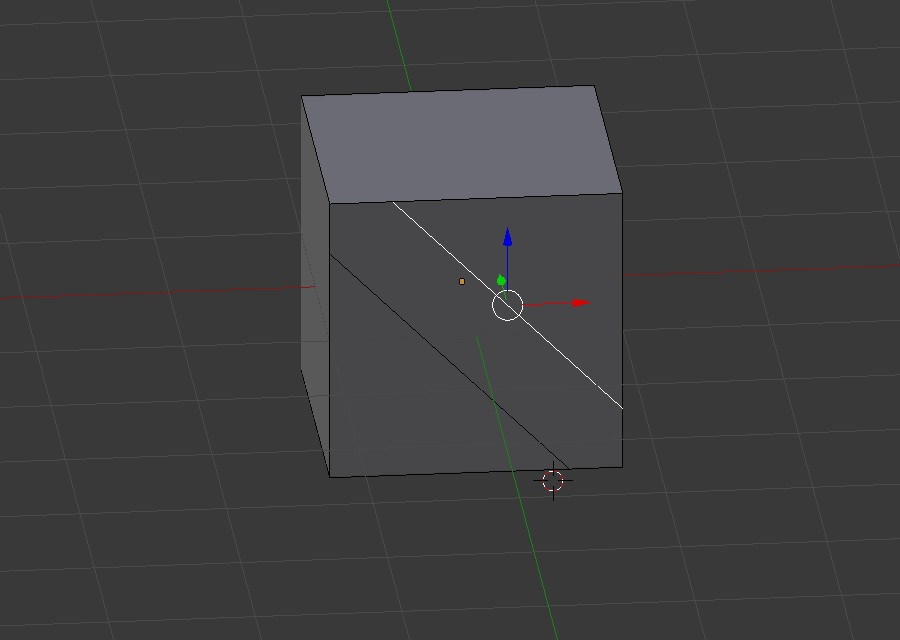
Agora crie outras arestas para que fique de forma que lembra táboas atrás daquela que fica na diagonal que criaste no passo anterior.
Após adicionar as arestas que formar quatro tábuas na horizontal, façamos o seguinte, selecione os vértices de cada tábua e duplique para você saber a posição original com que os vértices da tábua haviam localizados, faça o seguinte na tábua que estás editando selecione o vértice, apenas no local onde a tábua encosta na tábua inclinada e pressione Shift + D.
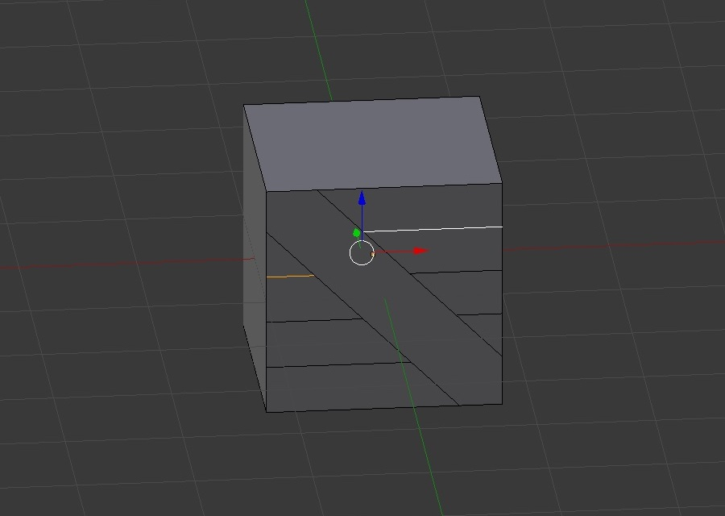
Agora com a ferramenta Knife "Faca" ligue os vértice da posição inicial até a posição de extremidade da outra tábua com o vértice que haviam, remova os vértices antigos e deixe apenas os vértices que compôem agora a nova forma das tábuas, para usar a ferramenta "Knife" no modo de Edição de Malha na 3D View pressione a tecla [K].
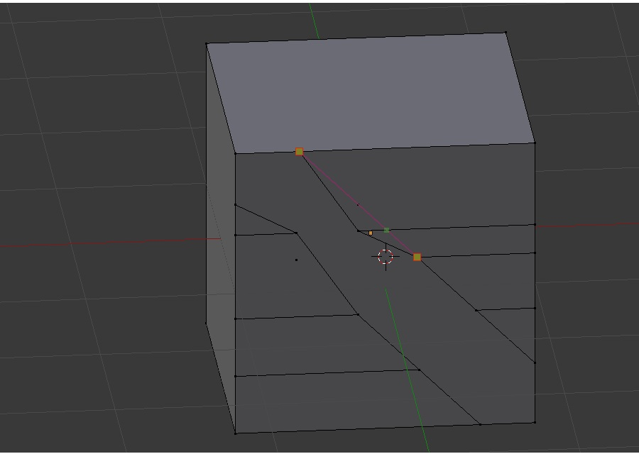
Faça o mesmo com a ferramenta Knife para a outra Aresta da tábua que desejamos que fique na diagonal da face do cubo. Assim:
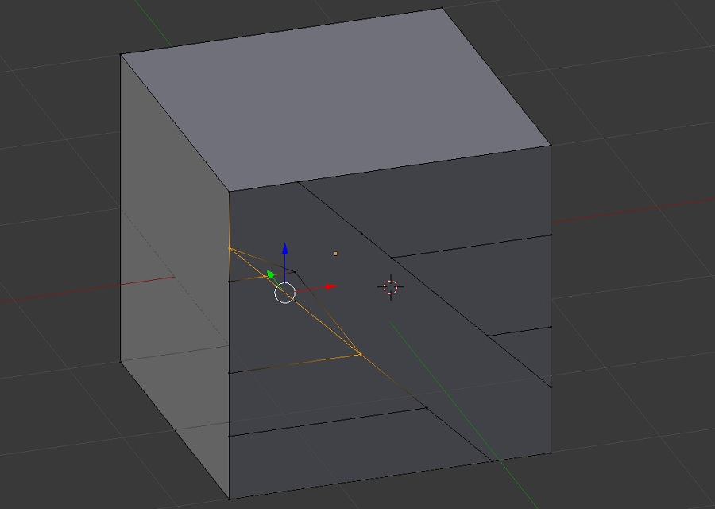
Remova os vértices que sobraram e deixa apenas os vértices das tábuas: as tábuas da horizontal e a tábua da diagonal que fica sobre as outras tábuas desta face do cubo.
Agora selecione cada vértice que está na extremidade da face e pressione a tecla e para ao longo de toda a aresta que é uma Aresta completa do Cubo, ao pressionar [E] pressione [G] em seguida [Y] e mova um pouco até ter uma posição visível que você vai alterar a localização logo em seguida.
Há uma face do objeto logo abaixo da recém criada, que não necessitamos agora então pressione no Blender [Ctrl] + [Tab] no modo de Edição na 3D View e remova a face que não necessitamos agora, e posicione os vertice da extremidade.
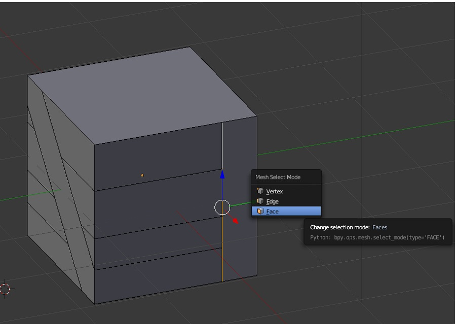
Com a ferramenta Merge [Alt] + [M] mova os vértices da extremidade para os cantos do Cubo, posição onde haviam uma Face, mas agora temos alguns vértices que estão ainda deixando um buranco no Cubo, já já vamos movêlos para a posição correta.
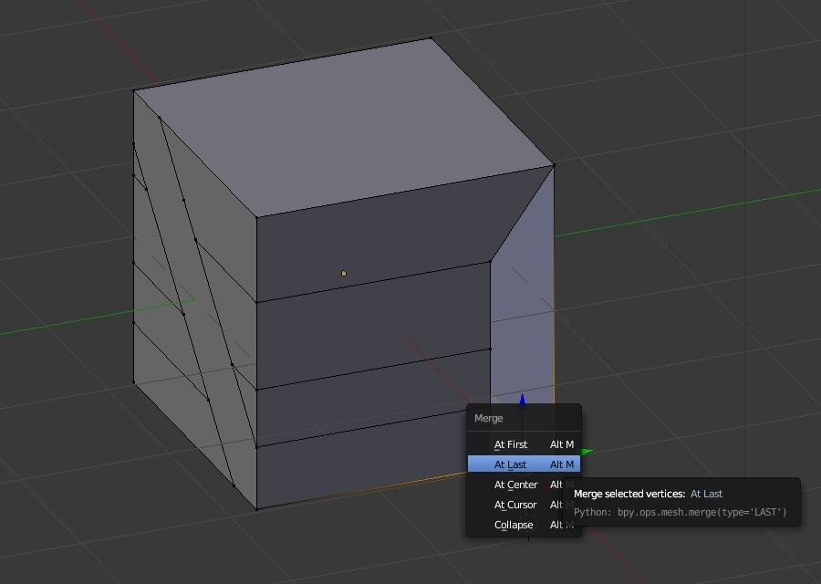
Agora com a posição Subdivide [W] temos a possibilidade de adicionar vértices extras exatamente onde desejamos: A face do cubo que desejamos tampar. E com a tecla [N] exibimos um painel com as informações deste objeto que atualmente está selecionado: "Um Vértice", queremos preservar a localização exata onde vamos posicionar o Novo Vértice, faça [W] e clique em Subdivide uma Vez.
Queremos a posição Z do vértice que compôe a tábua que queremos, então pequemos este vértice e copiamos a posição Z no painel à direita, em seguida [Alt] + [M] e Last, a posição Z para mim estava sendo algo assim: 0.416511, mas para seu Objeto 3D pode ser outro valor, então após juntar os vértices no painel cole a localização Z neste Vértice que você juntou.
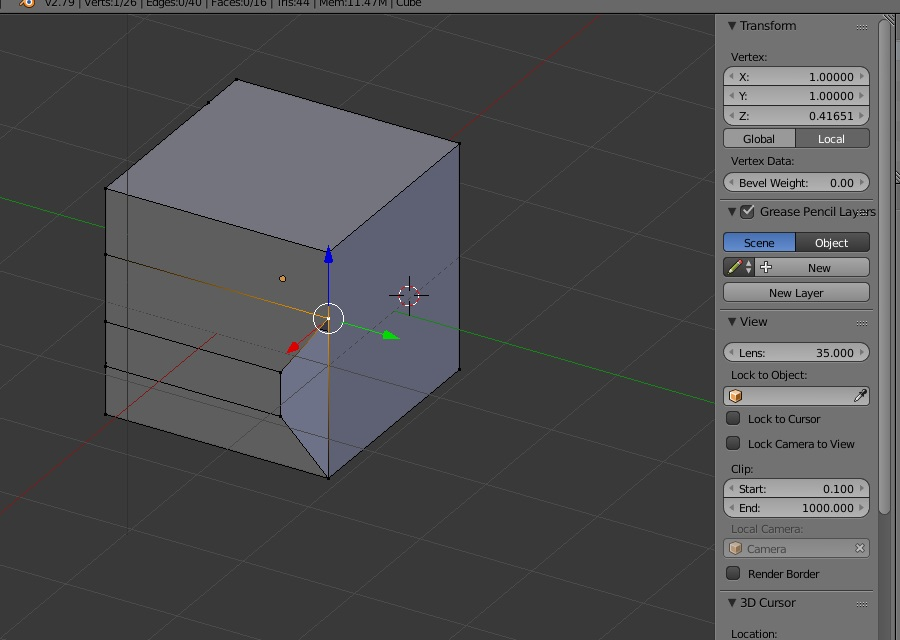
Faça o que acabamos de criar exatamente com os outros dois vértices que estão na posição incorreta: Subdivide na Aresta do Cubo e Merge dos vértices já criados para os recém criados, que após você fazer o cubo ficará assim com a segunda face completa.
Portanto, lembre-se de copiar a respectiva posição do vértice que estás movendo, para que a face da tábua não fique inclinada, que agora, não é isso que queremos, queremos faces retinhas e padronizadas.
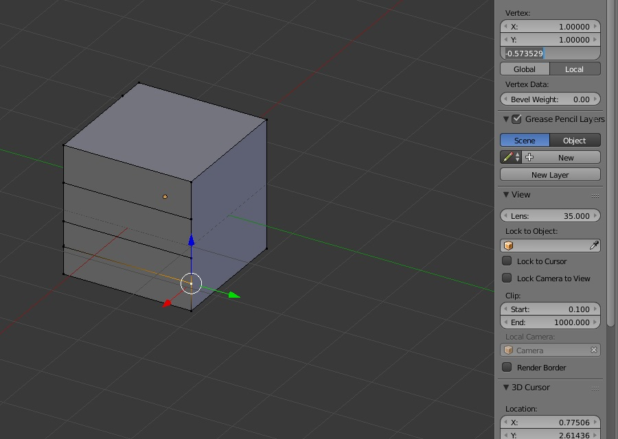
No modo de Edição na 3D View selecione a face inversa da que criamos uma tábua na diagonal, "está na face de trás do Cubo", pressione [X] e delete e escolha Faces. para excluir a face.
Vamos duplicar a face do cubo que tem uma tábua na horizontal, invertar no Eixo X e posicioná-lo na face que removemos. Então, com [Shift] e o clique com o botão direitor do Mouse selecione todas as faces que compôe a edição da face que contém a tábua na diagonal vamos duplicá-la, inverter e posicionar na posição da outra face.
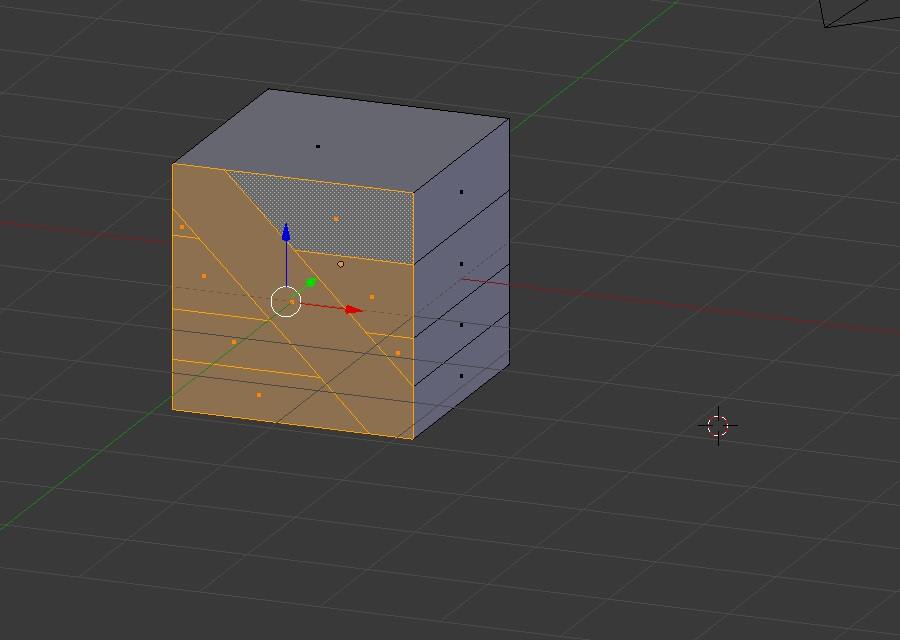
Duplique o cubo e rotacione o em 180 graus no eixo Z, que terá a face espelhada na horizontal, poderia ser feito de outra formas, mas está maneira está perfeita.
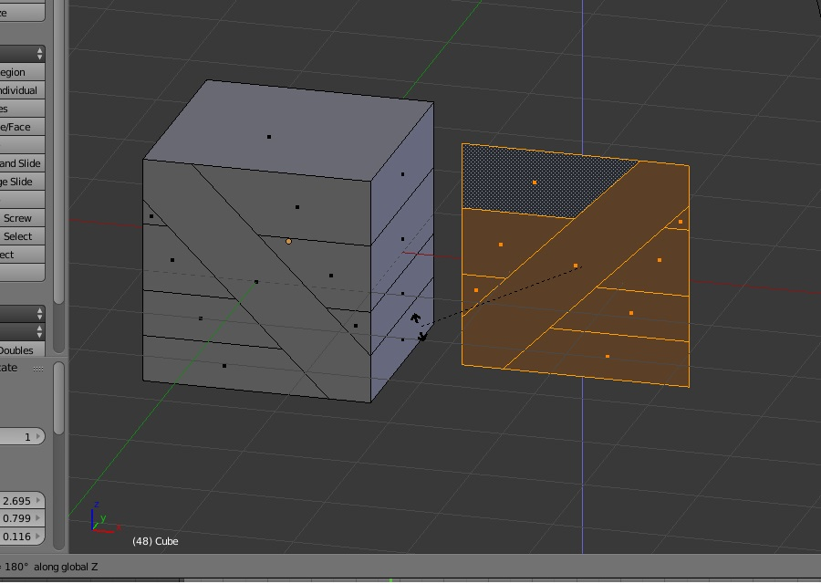
Para usarmos a posição exata da face do Cubo precisamos da origem da face e da âncora do Blender. Separe a face com [P], Selection. Coloque a origem da face no canto inferior direito. Com [Shift] + [S] Cursor to Selected, adicione o Cursor no Canto da face que criamos. Selecione o vértice do Canto e clique em [Shift] + [S] e escolha Cursor to Selected. Com a face separada, observe que no modo de Objeto a posição dela está diferente, desejamos que a posição da face esteja no canto inferior direito.
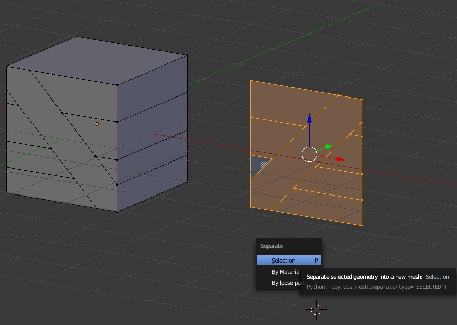
Mova a Âncora ou Cursor do Blender 3D para o canto infeirior da face criada, então clique: Object -> Transform -> Origin to 3D Cursor.
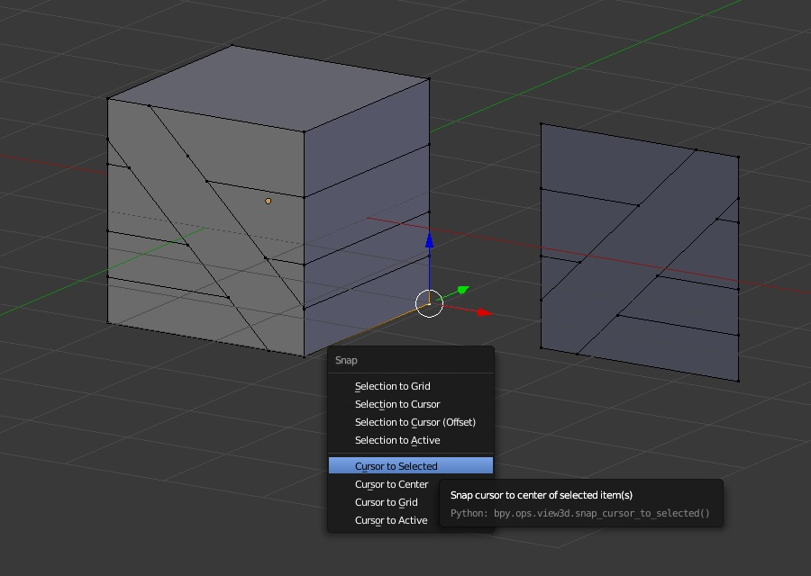
Selecione o ponto onde desejamos mover esta face: "No vértice do Cubo onde há início da face do cubo que retiramos" e faça o seguinte: pressione: [Shift] + [S] cursror to Selected, em seguida selecione a Face e preessione: [Shift] + [S] Selection to Cursor. E assim temos uma nova face criada, lembre se: logo em seguidad desejamos remover os vértices duplicados e deixar a malha sem espaços vazios.
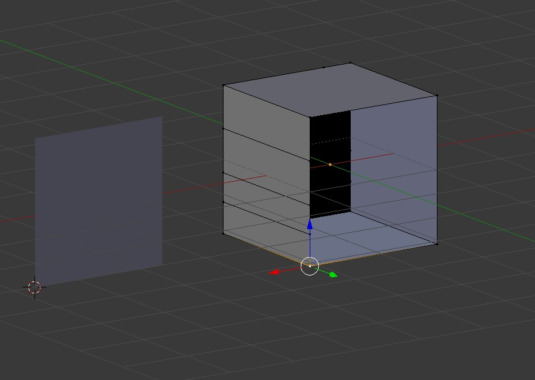
Para juntas as duas malhas que agora estão separadas. Selecione os dois objetos de Malha e pressione [Ctrl] + [J] de Join.
Infelizmente nem toda fruta é doce: Vamos acelerar aqui para que não haja muita repetição e acabe se tornando um tutorial enfadonho, com as técnicas e comandos que já listemos aqui em mais de dez passos, já podemos continuar e criar as outras três faces do cubo, lembre-se o cubo tem 6 faces.
Faça edição de uma das faces do Cubo, remova os Vértices duplicados e faça com que não há vãos na malha, e que todos os vértices estejam ligados para que no momento de fazer o Mapeamento UV da textura a malha não fique estranha ou errada. Edite e Deixe uma das faces assim:
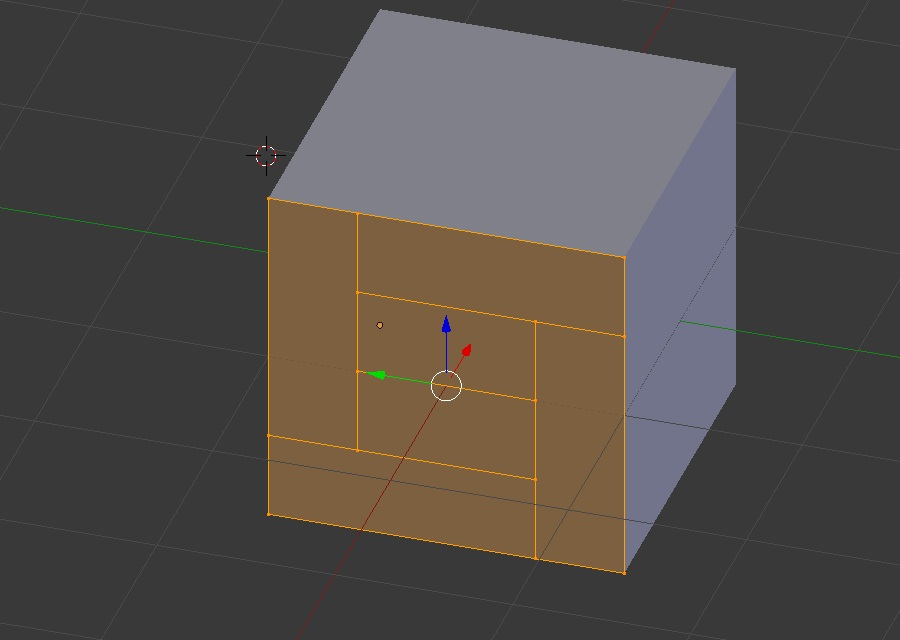
Edite e Deixe uma das Faces Assim:
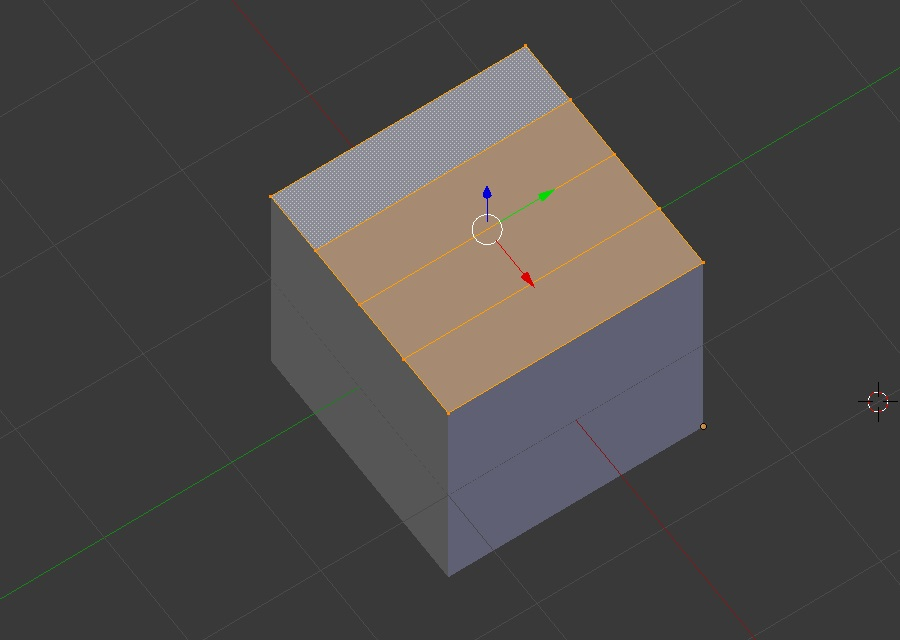
Após remover os vértices duplicados, e os vãos vazios unindo todas as arestas do Cubo, você pode já partir para o UVMap e texturização, então vamos começar a editar a região do Mapeamento UV, Pressione [T] ou selecione View -> Tool Shelf, Que no painel à Esquerda da 3D View ative a Seção Shading / UVs.
Na 3D View, no modo de Edição, Selecione todas as arestas apenas as de extremidade de cada Face e Lado do Cubo. Ao selecionar cada Aresta completa do Cubo seleciona na Seção UV do Painel, Unwrap e Mark Seam, para marcar a região que desejamos "Unwrapear" planificar para aplicar a textura.
No Painel [T] Selecione na seção UVs UV Mapping Unwrap e Mark Seam, que vai marcar as arestas que desejam para guiar o Mapeamento, se desejar corrigir, selecione Clear Seam com o segmento selecionado. Após isso na 3D View selecione [U] e Unwrap, que você verá no editor de imagem e no modo View o mapemento UV da planificação da Malha do Objeto.
É importante você selecionar corretamente a região de Mark Seam, para que você possa escalonar a região que desejas aproveitando o mesmo mapeamento para as outras faces dando continuidade na edição do UVMap.
Por algum deslize ou erro de cálculo do algoritmo, que não está impossível de ocorrer o mapeamento que fiz ficou um pouco inclinado, vou editar para que fique um pouco mais reto.
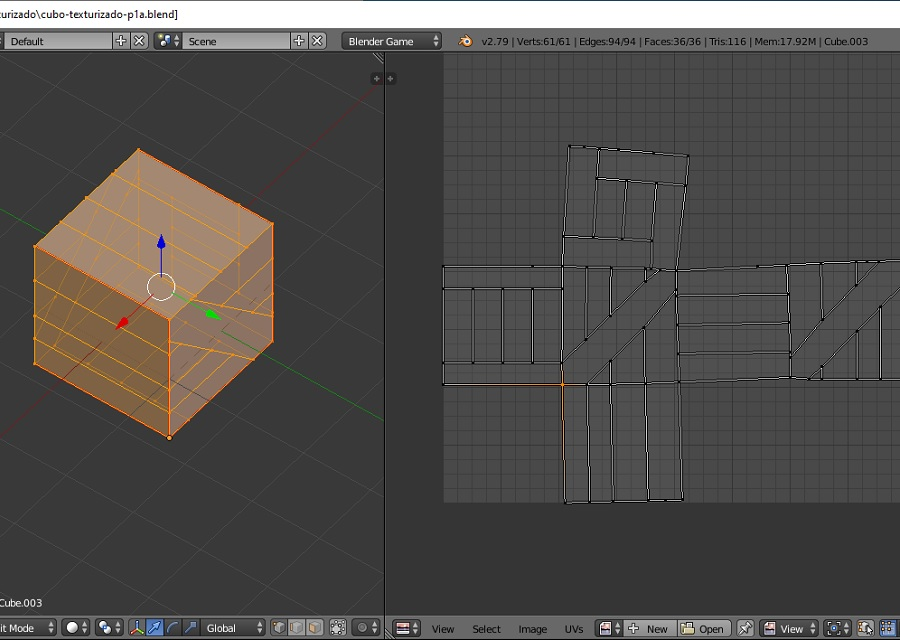
No Image Editor e UVMap com a Malha Editável, e Com os comandos [S] e [X] para escalonar os vértices selecionados na Horizontal ou [S] e [Y] para escalonar os vértices na vertical posso reordenar a posição para corrigir o UVMap que ficou ligeiramente inclinado. Quando aplico a escala pressionando [0] e [enter], eu posso alinhar os vértices do UVMap nesta direção.
Após editar o UVMap para ficar como eu desejava, temos uma Malha planificada e otimizada para o Desenho da Textura
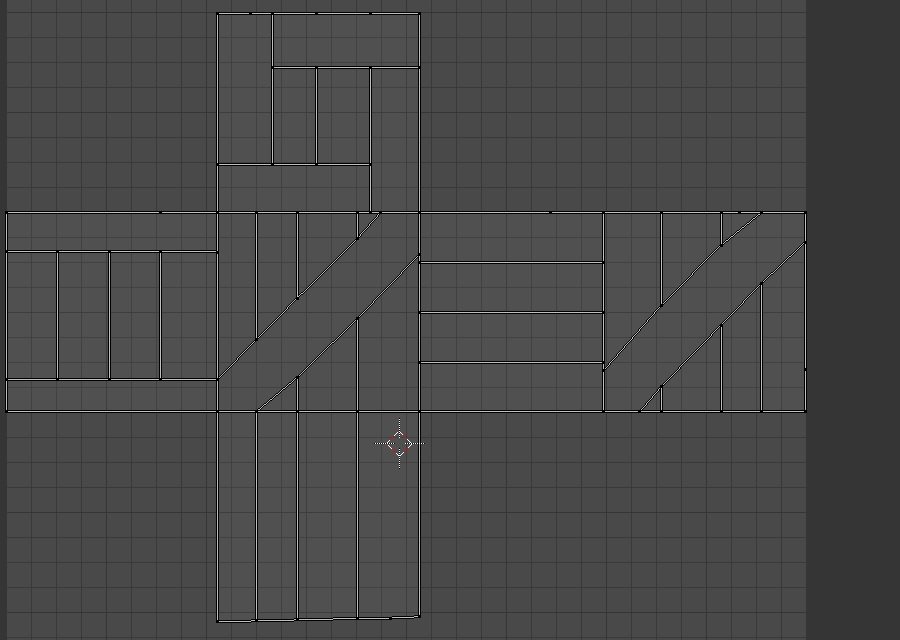
E, Após texturizar editando esta imagem, teremos todas as faces do Cubo com a textura que criamos, portanto, edite a imagem para que o Cubo tenha o estilo, design e coloração que você desejar com as guias para as tábuas que criamos que fecham o cubo, Aplique o Material com a textura que acabaste de criar, lembre se de salvar a textura em um formato .jpg ou .png para você gravar os binários de sua edição e tu poder resgatar depois após fechar e abrir o blender denovo.
Para Voltar ao Menu inicial:
<< Voltar
O resultado final você pode encontrar aqui:
Demonstração: Visualizar
Download: Projeto Editável